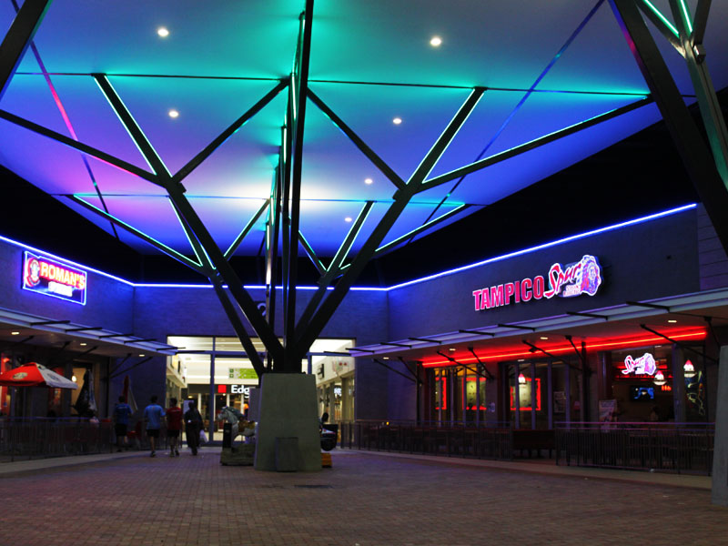

Facilities
Soshanguve Radio
Located at one of many shopping centers in Soshanguve, Soshanguve radio is the local radio station which is broadcasted on radio frequency 93.0 fm. The station has 24 years to its belt with a huge following it is the one stop center for local news and entertainment. It also organises events which contributes to the wellbeing of the locals.


Soshanguve Crossing Mall

Soshanguve Crossing is owned by Resilient Properties, Moolman Group and Falcon Forest Trading SA (Pty) Ltd. Featuring a GLA of approximately 39 120 m2, along with a prime location, the mall is ideally situated with high visibility and easy access from the busy intersection of Ruth First and Aubrey Matlala Roads. The mall is built on a single-level, is air-conditioned, features three entrances, and is very easy to navigate. Plus, Soshanguve Crossing boasts 670 open parking bays and 811 undercover parking bays – all free of charge.

A covered taxi facility is also available for commuters visiting the mall. Altogether, the mall hosts 95 shops. This includes South Africa’s 'Big 5' retail brands.: Shoprite, Spar, Edgars, Game, and Woolworths. These anchor tenants are supported by a vast variety of national retailers in the mall: Mr Price Group, Pepkor Group, Foschini Group, Truworths, Identity, Studio 88, Rage, Webbers, Miladys, Jam Clothing, Roman’s Pizza, Spur, KFC, Clicks, MTN, Cell C, Vodacom, American Swiss, Sterns, Pep Cell and Multiserv. Soshanguve Crossing also houses a number of full-fledged banks: Standard Bank, Nedbank, Capitec, Old Mutual Bank and First National Bank.

Giant Stadium
Soshanguve Giant Stadium, commonly referred to as Giant Stadium, is a multi-purpose stadium located in Soshanguve, a township of Pretoria, South Africa. It was utilized as a training field for teams participating in the 2010 FIFA World Cup after being rebuilt in 2009. Besides serving as a training venue for the World Cup, it was also used as a public viewing area for residents to watch matches. Currently the stadium is the home for JDR Stars F.C. and Soshanguve Sunshine F.C. , playing in the North West Province of Vodacom League. However, the stadium is situated a few kilometers within the border of the Gauteng province.